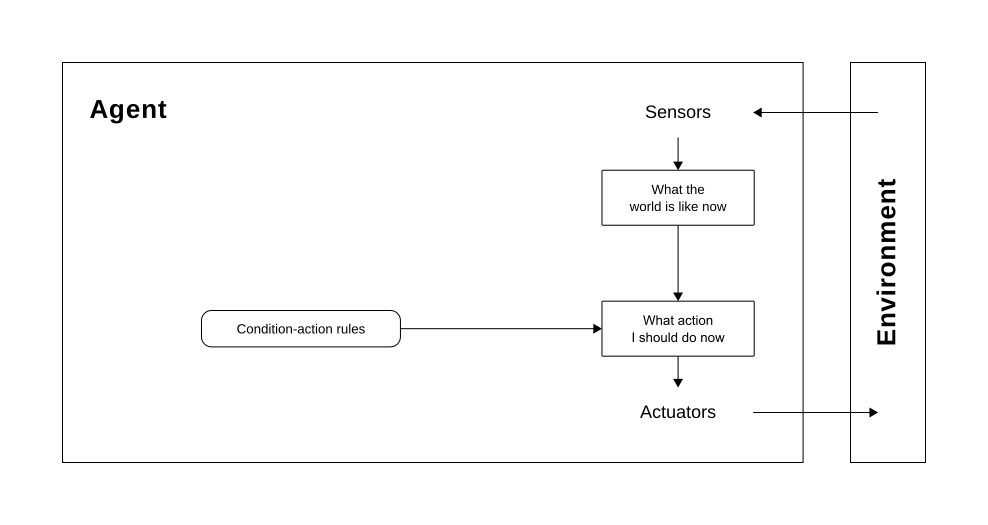
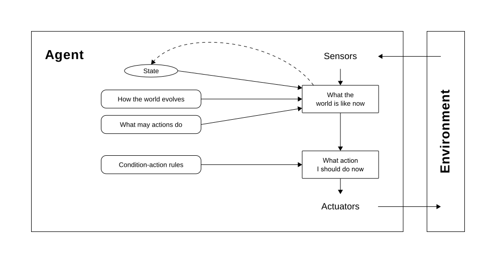
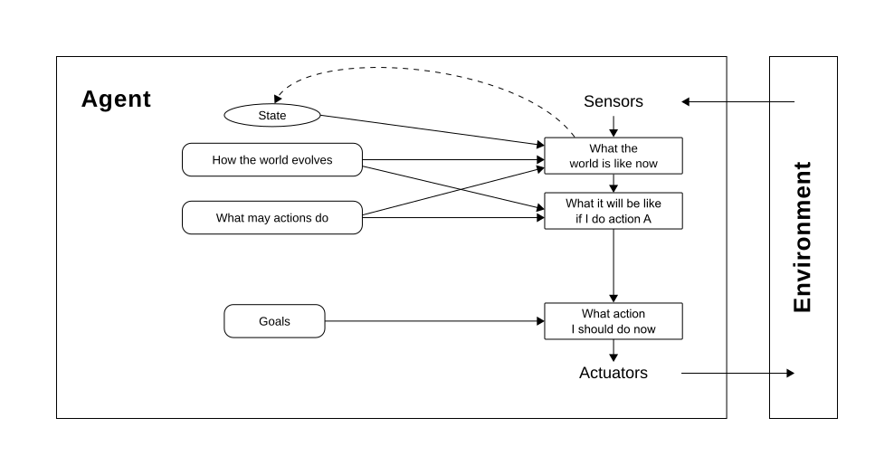
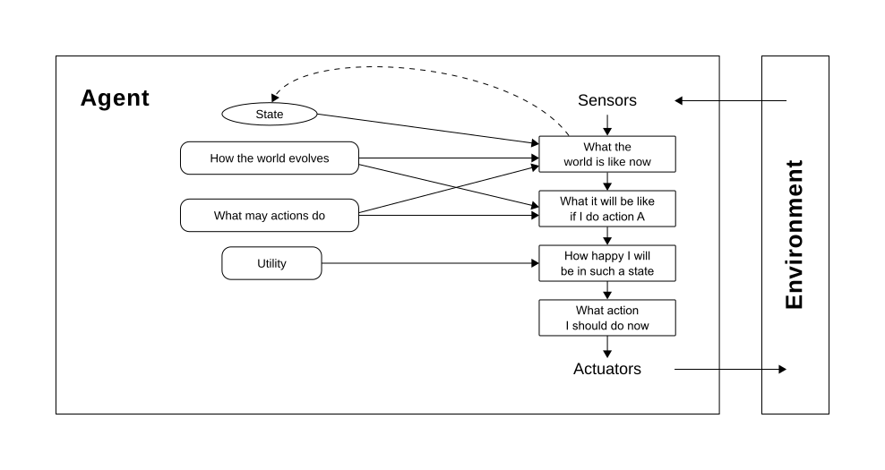
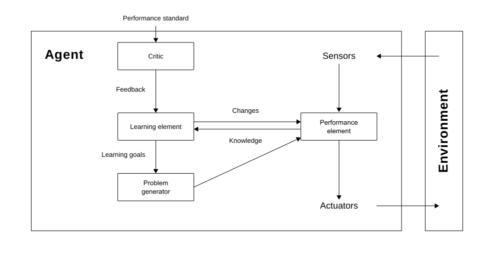
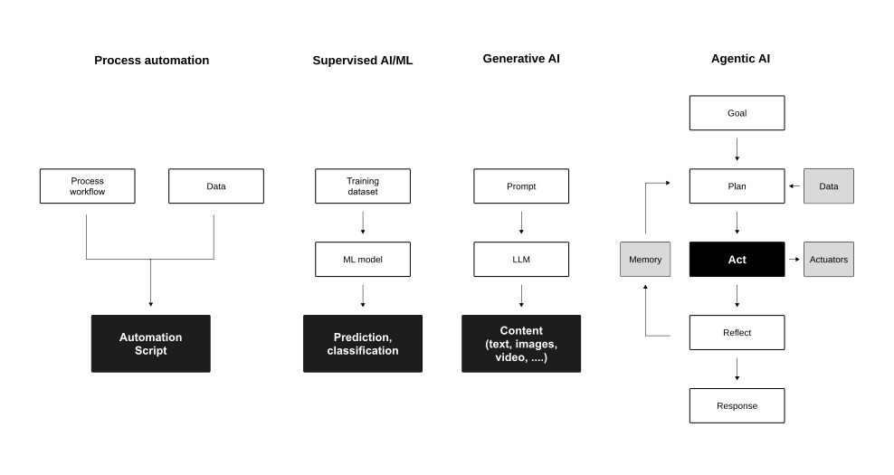

Learning objectives
After completing this unit, you will be able to:
- Explain human, collective, and artificial intelligence and their complementary strengths.
- Describe the evolution from rule-based agents to agentic AI systems and their key characteristics.
- Analyse how agentic AI creates and conditions business value in organisations.
- Design and evaluate human-AI collaboration considering governance, explainability, and accountability requirements.
- Reflect on the ethical and organisational implications of deploying autonomous AI systems.
Intelligence
Definition
Intelligence is the ability to accomplish complex goals, learn, reason, and adaptively perform effective actions within an environment. Gottfredson (1997)
Or more concisely: think and act — humanly and/or rationally.
The definition by Gottfredson (1997) is intentionally broad. It covers individual humans, groups of people, artificial systems, and combinations thereof — which makes it an ideal starting point for a unit that ultimately asks: how do humans and AI systems best combine their respective intelligence to create value?
The four key verbs deserve attention: accomplish goals (orientation towards outcomes), learn (adaptive capacity), reason (capacity for inference and planning), and act effectively (not just think, but act in a way that changes the world). These four dimensions will reappear throughout both sessions.
Human intelligence
Human intelligence “covers the capacity to learn, reason, and adaptively perform effective actions within an environment, based on existing knowledge. This allows humans to adapt to changing environments and act towards achieving their goals.” Dellermann et al. (2019, p. 632)
Sternberg et al. (1985) proposes three distinctive dimensions:
- Componential (analytica) intelligence — the ability to break down complex information and apply logical processes to find the most efficient solution
- Experiential (creative) intelligence — the ability to synthesize prior knowledge to navigate novel situations and automate new tasks
- Contextual (practical) intelligence — the ability to read environmental demands and adapt your behavior (or the environment) to achieve success
Sternberg et al. (1985)’s triarchic theory is valuable here because it illuminates which dimensions of human intelligence AI systems complement most effectively. Componential intelligence (i.e, structured analytical reasoning) is precisely where current AI systems (including large language models) excel. Contextual intelligence and the kind of wisdom that comes from lived experience remain harder to replicate artificially, which creates the design space for hybrid systems.
Kahneman (2011) proposed a complementary two-system model:
- System 1 operates automatically, intuitively, and quickly with little effort;
- System 2 is deliberate, analytical, and effortful.
Human cognition relies heavily on System 1, which makes us fast but susceptible to biases (i.e., cognitive shortcuts that work well most of the time but can fail systematically). AI systems can help counteract some System 1 biases, but (as we will see in Block E) can also create new ones.
Cognitive architecture
Kahneman (2011) distinguishes two modes of human cognition:
- System 1: fast, automatic, intuitive
Efficient for routine decisions, but prone to bias and heuristic errors - System 2: slow, deliberate, effortful
Accurate for complex analysis, but resource-intensive and easily fatigued
Both modes have blind spots. AI augmentation can (under the right conditions) compensate for System 1 biases without overwhelming System 2 capacity.
Collective intelligence
Collective intelligence refers to “[…] groups of individuals acting collectively in ways that seem intelligent.” Malone (2015, p. 3)
The concept implies that under certain conditions, a (large) group of homogeneous individuals can outperform any single individual or even a single expert (Leimeister, 2010).
Today, research increasingly focuses on hybrid collective intelligence: connecting heterogeneous agents (e.g., humans and machines) so that they combine complementary intelligence and act more intelligently together (Malone, 2015).
Artificial intelligence
The term artificial intelligence describes systems that perform “[…] activities that we associate with human thinking, activities such as decision-making, problem solving, learning […]” Bellman (1978, p. 3)
AI can be defined as “[…] the art of creating machines that perform functions that require intelligence when performed by people […]” Kurzweil et al. (1990, p. 117)
The basic idea: systems that can analyse their environment, adapt to new circumstances, and act in ways that advance specified goals — without explicit programming for every situation.
Complementary strengths

Dellermann et al. (2019)’s framework of complementary strengths provides the conceptual foundation for the entire unit. AI systems excel at processing large datasets, recognising complex patterns consistently, maintaining recall, and performing at scale without fatigue. Humans provide contextual understanding, creativity, ethical judgment, and social intelligence — the kind of knowledge that is tacit, situationally embedded, and difficult to formalise.
Hemmer et al. (2025) (EJIS 2025) subsequently formalised the sources of this complementarity. They identify two key drivers. First, information asymmetry: humans and AI have access to fundamentally different information types — machines process large volumes of structured data; humans bring tacit, experiential, and contextual knowledge that is difficult to encode formally. Second, capability asymmetry: humans and AI differ in which cognitive tasks they can perform well. Complementarity emerges when both asymmetries exist simultaneously, enabling the combined system to outperform either component alone.
Agent architectures
Rational agents

Russel & Norvig (2022) define a rational agent as an entity that (1) perceives its environment through sensors, (2) maps percept sequences to actions based on its agent function, and (3) executes actions through actuators. The percept sequence is the complete history of everything the agent has ever perceived. The agent function maps any percept sequence to an action — it is the abstract mathematical specification of what the agent does.
Rationality is tied to a performance measure: a criterion that evaluates the desirability of environment states from the agent’s perspective. A rational agent selects the action expected to maximise the performance measure, given its percepts and built-in knowledge. Crucially, rationality maximises expected performance, not actual performance — the latter would require omniscience about the future, which is generally not available.
Performance measure
If we use, to achieve our purposes, a mechanical agency with those operations we cannot interfere once we have started it […] we had better be quite sure that the purpose built into the machine is the purpose which we really desire. Wiener (1960, p. 1358)
Formulating a performance measure correctly is difficult — and a reason to be careful.
Rationality vs. perfection
Rationality is not the same as perfection.
- Rationality maximizes expected performance.
- Perfection maximizes actual performance.
- Perfection requires omniscience.
- Rational choice depends only on the percept sequence to date.
Performance standards
To understand the engineering limits of AI, we distinguish between three standards:
| Metric | Definition | Info Requirement | Feasibility |
|---|---|---|---|
| Rationality | Maximizing expected performance | Percept sequence + prior knowledge | High: The engineering standard |
| Omniscience | Knowing the actual outcome of actions | Complete future and present data | Impossible: Requires a “crystal ball” |
| Perfection | Maximizing actual performance | Requires Omniscience | Impossible in unpredictable worlds |
Overcoming ignorance
To bridge the gap between initial ignorance and rational behavior, agents must utilize information gathering and learning.
Since agents lack omniscience, they must be designed to:
- Information gathering: take actions specifically to modify future percepts (e.g., looking both ways before crossing a street).
- Learning: modify their internal agent function based on experience to improve performance over time.
As the environment is usually not completely known a priori and not completely predictable, these are vital parts of rationality (Russel & Norvig, 2022, p. 59).
The vacuum cleaner needs to explore an initially unknown environment (exploration) to maximize its expected performance. A vacuum cleaner that learns to predict where and when additional dirt will appear will do better than one that does not.
Simple reflex agents

Simple reflex agents select actions based solely on the current percept, ignoring all prior history. They implement condition–action rules: if the current percept matches condition C, perform action A. They work only when the environment is fully observable — the current percept contains all the information needed to make a rational decision.
Example: A thermostat that turns heating on when temperature < 20°C and off when temperature > 22°C. It ignores trends, time of day, or external factors. In a stable environment with reliable sensors, this works well.
Model-based reflex agents

Model-based reflex agents overcome the full-observability limitation by maintaining an internal model of the world. This model has two components: the transition model (how the world changes, both independently and in response to the agent’s actions) and the sensor model (how world states map onto the agent’s percepts). The agent uses this model to infer the current state and decide on an action — it can handle situations where the current percept alone is insufficient.
Example: A self-driving car uses its transition model to predict the likely positions of pedestrians and vehicles one second ahead, even when they pass behind an obstruction.
Goal-based agents

Utility-based agents

Learning agents

Learning agents represent a fundamental advancement: they can modify their own behaviour based on experience, making them far more autonomous than their predecessors. Russel & Norvig (2022) identify four conceptual components. The learning element acquires knowledge by analysing data, interactions, and feedback — employing supervised, unsupervised, or reinforcement learning as appropriate. The performance element executes tasks using current knowledge. The critic evaluates the performance element’s actions against a performance standard and provides feedback. The problem generator proposes exploratory actions — sometimes suboptimal in the short run — that enable discovery of better strategies over time.
The critical property introduced here is autonomy: a learning agent can improve beyond its initial specification, discovering solutions to problems its designers did not anticipate. This property, taken to its logical extension, is what defines agentic AI.
Evolution of agents

Agentic AI
Definition
Agentic AI is an emerging paradigm in AI that refers to autonomous systems designed to pursue complex goals with minimal human intervention. Acharya et al. (2025, p. 18912)
Core characteristics
- Autonomy & goal complexity: handles multiple complex goals simultaneously; operates independently over extended periods
- Adaptability: functions in dynamic and unpredictable environments; makes decisions with incomplete information
- Independent decision-making: learns from experience; reconceptualizes approaches based on new information
The shift to agentic AI is not merely incremental. Acharya et al. (2025) identify three technical foundations: reinforcement learning enables systems to refine strategies through trial and error; goal-oriented architectures manage complex, multi-step objectives; and adaptive control mechanisms allow recalibration in response to environmental changes. Together, these enable systems that can pursue extended task sequences with minimal human intervention.
Berente et al. (2021) (MIS Quarterly, 2021) provide a complementary management perspective, arguing that AI systems create three interdependent management challenges: autonomy (the system acts with progressively less human guidance), learning (the system’s behaviour changes over time through experience), and inscrutability (the system’s internal reasoning is opaque to observers). Managing these three dimensions simultaneously — rather than treating each in isolation — is the central challenge of deploying agentic AI in organisations.
Agentic AI vs. traditional AI
| Feature | Traditional AI | Agentic AI |
|---|---|---|
| Primary purpose | Task-specific automation | Goal-oriented autonomy |
| Human intervention | High (predefined parameters) | Low (autonomous adaptability) |
| Adaptability | Limited | High |
| Environment interaction | Static or limited context | Dynamic and context-aware |
| Learning type | Primarily supervised | Reinforcement and self-supervised |
| Decision-making | Data-driven, static rules | Autonomous, contextual reasoning |
Workflow patterns in agentic systems
Anthrophic (2024) discusses five key patterns for designing agentic AI workflows:
- Prompt chaining — output of one step becomes input to the next; creates complex multi-step reasoning flows
- Routing — directs tasks to specialised components based on type; improves efficiency through targeted processing
- Parallelisation — processes independent subtasks simultaneously; increases throughput
- Orchestrator-workers — central orchestrator delegates to specialised worker agents; manages coordination and integration
- Evaluator-optimizer — separate components generate, evaluate, and refine; enables iterative quality improvement
Prompt chaining works best for tasks with clear sequential dependencies — each step must complete before the next can begin. It is the easiest pattern to audit and debug.
Routing is particularly valuable when tasks are heterogeneous: a general-purpose system can direct customer service queries to a billing specialist, a returns specialist, or a technical support specialist, rather than attempting to handle all cases with one agent.
Parallelisation — processing multiple independent subtasks simultaneously — is most valuable for high-volume, time-sensitive tasks (e.g., analysing 500 customer reviews simultaneously).
Orchestrator-workers is the most powerful and the most governance-intensive. The orchestrator autonomously decomposes a high-level goal into subtasks, delegates, monitors, and integrates. This is the pattern underlying most enterprise AI agent systems (e.g., AutoGPT, LangGraph, Microsoft Copilot agents).
Evaluator-optimizer creates a feedback loop: a generator agent produces an output, an evaluator agent scores it, and the loop continues until quality criteria are met. This is particularly valuable for tasks with objectively measurable quality (e.g., code correctness, document compliance).
Hybrid Intelligence
Concept
The idea is to combine the complementary capabilities of humans and computers to augment each other. Dellermann et al. (2019)
Definition
Hybrid intelligence is defined as the ability to achieve complex goals by combining human and artificial intelligence, thereby reaching superior results to those each of them could have accomplished separately, and continuously improving by learning from each other. Dellermann et al. (2019, p. 640)
Main characteristics:
- Collectively: tasks are performed jointly; activities are conditionally dependent
- Superior results: neither AI nor humans could have achieved the outcome without the other
- Continuous learning: all components of the socio-technical system learn from each other through experience
Distribution of roles

The distribution of roles in hybrid intelligence is not fixed — it is a design choice that should be calibrated to the specific task, context, and goals. Dellermann et al. (2019) illustrate this with a spectrum from fully human to fully automated, with hybrid systems occupying the middle space where complementarities are exploited.
Importantly, this spectrum is dynamic: as AI capabilities develop, some tasks that once required human judgment can increasingly be automated. Conversely, as AI systems are deployed, human roles often evolve rather than disappear. Spring et al. (2022) show this pattern in law and accountancy firms: AI-based systems selectively automate high-volume, back-office tasks, but this automation simultaneously augments adjacent professional work — reconfiguring rather than replacing the human role. The two cannot be neatly separated.
The Automation–augmentation paradox
Raisch & Krakowski (2021) argue that automation and augmentation are not opposing strategies — they are interdependent:
- Overemphasising automation (machines replacing humans) creates reinforcing cycles that erode human capability, ultimately making humans less able to provide value when it matters most
- Overemphasising augmentation (humans plus machines) can under-exploit AI capabilities and leave significant efficiency potential unrealised
Effective AI deployment requires holding both logics simultaneously, managing their tensions across time and space
The question is not “automate or augment?”
— but “when, where, and how to combine both?”
Raisch & Krakowski (2021) develop their argument using paradox theory from organisational science. They identify that automation and augmentation create reinforcing causal loops that can become self-sustaining and difficult to reverse. An automation-dominant logic progressively reduces human skill through disuse, eventually leaving organisations without the human capacity to maintain systems, handle novel exceptions, or provide meaningful oversight. An augmentation-dominant logic may preserve human roles but prevent the efficiency, scale, and consistency gains that make AI economically viable. The solution is not a “balance” between the two poles but a dynamic management of their interdependence — deliberately choosing where each logic applies, across time, task type, and organisational level.
Managing AI: Three dimensions
Berente et al. (2021) identify three interdependent dimensions that define the management challenge of AI systems:
- Autonomy: AI acts with progressively less human guidance; requires careful scoping of delegated decision authority
- Learning: AI behaviour changes over time through experience; creates challenges for quality control and accountability
- Inscrutability: AI reasoning is opaque; limits the ability to audit, explain, and correct decisions
These three dimensions interact: higher autonomy + higher inscrutability creates accountability gaps. Learning + higher inscrutability can produce invisible drift in system behaviour.
From tools to teammates
Seeber et al. (2020) highlight a fundamental shift in how AI systems are positioned in organisations:
| Traditional AI | AI as Teammates |
|---|---|
| Role: Tool to be used | Role: Active collaboration partner |
| Interaction: Responds to commands | Interaction: Engages proactively |
| Function: Task automation | Function: Complex problem-solving |
| Agency: Limited / directed | Agency: Autonomous with initiative |
| Integration: Technical system integration | Integration: Social & team integration |
Critical design areas
Seeber et al. (2020) identify three interconnected design areas for AI teammates:
- Machine artifact design: the AI system itself: appearance, capabilities, interaction modalities
- Collaboration design: how humans and AI work together: team composition, task allocation, workflows, communication protocols
- Institution design: the broader context: responsibility frameworks, liability, training requirements, governance structures
These areas are interdependent: decisions in one area constrain and shape the others. Effective design requires a holistic rather than purely technical approach.
Implications for hybrid intelligence
According to Peeters et al. (2021):
- Intelligence should be studied at the group level of humans and AI-machines working together — not at the level of individual components
- Increasing system intelligence means increasing the quality of interaction between components — not merely improving individual components
- Both human and artificial intelligence are shallow when considered in isolation
- No AI is an island — value emerges from the system, not the artefact
Value creation with Agentic AI
Revisiting the value chain
The IT value creation process (Soh & Markus, 1995):
IT investments only translate into performance if three linked processes work:
- IT conversion: IT expenditure lead to IT assets (requires appropriate conversion)
- IT use: IT assets create IT impacts (usage is the critical missing link)
- Competitive process: IT impacts foster organisational performance (depends on context and competitors)
When AI agents close the mising link (i.e., IT usage) — what changes?
Soh & Markus (1995) proposed the process model of IS value creation as a response to the “productivity paradox” — the observation that IT investments often did not produce measurable performance improvements. Their central insight was that IT assets do not create value automatically; IT use is the essential linking process. Without effective use — defined by Burton-Jones & Grange (2013) as transparent interaction, representational fidelity, and informed action — IT assets produce no organisational benefit.
In the context of agentic AI, this model requires reinterpretation. The “user” is no longer exclusively human. The agent itself interacts with information systems, processes data, and executes actions. This shifts the governance question: instead of asking how to ensure humans use AI effectively, organisations must ask how to ensure AI agents act in ways that reliably advance organisational goals — which leads directly to the design and governance questions of this session.
When agentic AI shifts the missing link
The shift from human use to agent action changes where value is created and where it can break down:
| Characteristic | Traditional IT | Agentic AI |
|---|---|---|
| Missing link | Human adoption & use | Agent design & governance |
| Risk | Non-adoption, misuse, workarounds | Misaligned objectives, invisible errors, drift |
| Remedy | Training, UX design, change mgmt | Careful design, monitoring, oversight structures |
| Value driver | Effective human behaviour | System-level performance & accountability |
Design principles for AI-augmented decisions
Herath et al. (2024) derive seven evidence-based design principles from action design research across three business decision contexts:
- Transparent uncertainty communication: AI should signal its confidence, not just its recommendation
- Explainable reasoning paths: users need to understand why, not just what
- Scoped autonomy: AI should act autonomously only within well-defined task boundaries
- Human override capability: human judgment must remain exercisable at every stage
- Feedback integration: systems should learn from human corrections in near-real time
- Accountability anchoring: every AI decision output must be linked to a responsible human
- Context-sensitive presentation: recommendations should be tailored to the decision context, not generic
Herath et al. (2024) conducted action design research across three business contexts — customer segmentation, customer retention, and portfolio redesign — iterating design artefacts with practitioner partners. Their seven principles address both technical design (how the AI system presents information) and sociotechnical design (how responsibility is structured). The accountability anchoring principle is particularly consequential: without an explicit design decision linking AI outputs to accountable humans, organisations risk creating what Berente et al. (2021) call “accountability voids” — situations where AI acts but no human is clearly responsible for the outcome.
When does collaboration create value?
Fügener et al. (2022) conducted experiments on human-AI prediction tasks and found:
Human-AI teams achieve superior performance only when AI delegates to humans — not vice versa.
Human metaknowledge, i.e., the ability to assess your own reliability in a specific context (“knowing what you know”), seems to be the critical variable:
- AI can assess its own certainty well and delegates effectively (even to low-performing humans) because it knows what it knows and what it doesn’t
- Humans, by contrast, lack metaknowledge: they cannot accurately judge their own reliability, leading to poor delegation decisions despite genuine willingness to collaborate
- This metaknowledge deficit is unconscious and cannot be explained by algorithm aversion — subjects tried to follow delegation strategies diligently and appreciated the AI support
Fügener et al. (2022)’s findings challenge a common assumption in human-AI collaboration design. The typical expectation is that humans can learn to delegate effectively to AI over time. Their experimental evidence shows that this fails — not because of algorithm aversion, but because humans lack metaknowledge: the ability to accurately assess their own reliability on a specific task.
The asymmetry is striking: AI delegated effectively because it could assess its own certainty, handing off difficult cases to humans — and this improved performance even when those humans were low performers. Humans, by contrast, made poor delegation decisions because they were systematically wrong about which cases they could handle. Subjects tried to follow delegation strategies diligently and appreciated the AI support, but their lack of self-knowledge undermined collaboration.
Design implication: interfaces should support human self-assessment (helping users judge their own reliability) rather than assuming humans will naturally calibrate their reliance on AI. Metaknowledge deficits are unconscious — they cannot be addressed through motivation or training alone.
The Delegation paradox
Traditional AI design assumes “top-down” delegation: humans decide when to hand tasks to AI. However, empirical evidence suggests this is often ineffective (Fügener et al., 2022).
Why human delegation fails
- Humans cannot accurately assess their own reliability as they are systematically wrong about which cases they can handle, leading to poor delegation decisions.
- This failure is not caused by distrust of AI (i.e., AI aversion). Subjects tried to follow delegation strategies diligently and appreciated AI support, but their lack of self-knowledge undermined collaboration.
Why AI delegation works
- AI can assess its own certainty and effectively hand off difficult cases to humans. This improved performance even when the humans were low performers.
- Interfaces should support human self-assessment rather than relying on humans to calibrate their own reliance on AI naturally.
Context-dependence of value
Revilla et al. (2023) conducted a field experiment in retail demand forecasting. Their results reveal the conditionality of hybrid intelligence value:
| Context | Superior Strategy | Explanation |
|---|---|---|
| Short horizon, high uncertainty |
Automation (AI only) |
AI extracts signal from noise better; humans “tinker at the edges” and add bias |
| Long horizon, low uncertainty |
Augmentation (human + AI) |
AIML model is well-grounded; humans add contextual knowledge the algorithm misses |
| Short horizon, low uncertainty |
Adjustable automation | Some contextual knowledge helps, but short-horizon noise limits full augmentation benefit |
| Long horizon, high uncertainty |
Mixed | Long horizons favor human input, high uncertainty favors AI — effects partially offset |
There is no universal best practice. Task context determines optimal collaboration strategy.
Explainability & trust
Requirements for effective hybrid intelligence
Peeters et al. (2021) identify four properties that human-AI systems must exhibit for effective collaboration:
- Observability: an actor should make its status, knowledge of the team, task, and environment visible to collaborators
- Predictability: an actor should behave consistently so others can anticipate its actions when planning their own
- Explainability: agents should be capable of explaining their behaviour to collaborators
- Directability: collaborators should be able to re-direct each other’s behaviour when necessary
These properties enable calibrated trust (i.e., humans trusting AI appropriately): neither too much nor too little.
The XAI dilemma
Bauer et al. (2023) show that AI systems providing explanations (XAI) alongside predictions may:
- Draw users’ attention excessively to explanations that confirm prior beliefs (confirmation bias) rather than the prediction itself
- Diminish employees’ decision-making performance for the task at hand
- Lead individuals to carry over biased explanatory patterns to other domains
- Decrease individual-level noise (consistency increases) but increase systematic error
- Foster differences across subgroups with heterogeneous prior beliefs
Transparency ≠ better decisions.
How XAI is designed determines whether it helps or hurts.
The Bauer et al. (2023) findings have significant practical and regulatory implications. Many AI governance frameworks — including the EU AI Act — require explainability as a condition for deploying AI in high-risk contexts. The implicit assumption is that explanations improve decision-making by enabling meaningful human oversight. Bauer et al. (2023) provide experimental evidence that this assumption is frequently violated.
Their mechanism: explanations activate confirmation bias — the tendency to interpret new information in ways that confirm existing beliefs. When an AI provides an explanation (e.g., “this loan application was rejected because of low income and high debt”) alongside a prediction, users attend selectively to the parts of the explanation that confirm what they already believed, and ignore or discount evidence that contradicts it. The result is more consistent decisions (less random variation) but more systematically biased decisions (more strongly shaped by prior beliefs). Subgroups with different prior beliefs can arrive at very different conclusions from the same AI recommendation.
The design implication: explainability mechanisms should be evaluated empirically — not assumed to improve decision quality — and should be calibrated to the specific cognitive risks of the user population and decision context.
Types of AI explanations
Different explanation types serve different cognitive needs (Miller, 2019; Wang et al., 2019):
- How explanations: describe the AI’s process:
“I used features X, Y, Z to reach this conclusion” - Why explanations: justify the AI’s reasoning:
“This is the dominant factor because …” - What-if explanations: counterfactual analysis:
“If feature X changed, the outcome would be …” - Confidence indicators: uncertainty communication:
“I am 73% confident in this recommendation”
The most effective explanation type depends on user expertise, time pressure, decision stakes, and potential for bias activation.
Designing for complementarity
Hemmer et al. (2025) identify the organisational factors that enable effective human-AI complementarity:
- Digital infrastructure: quality and accessibility of data and AI tools
- Governance mechanisms: clear rules for how AI outputs are used and overridden
- Change management: deliberate support for users adapting to hybrid workflows
- Trust calibration: training and feedback mechanisms that help users calibrate AI reliance
Optimal task allocation:
- AI automates easy tasks
- Augmentation on tasks of similar difficulty
- Humans handle difficult tasks alone.
AI affordances in teams
According to Dennis et al. (2023), AI agents provide three fundamental affordances to human teams:
- Communication support: coordination and reminders, review and feedback, delegation capabilities
- Information processing support: data cataloguing, search and retrieval, information analysis, content organisation
- Process structuring: planning and scheduling, task breakdown, delivery tracking, quality assurance
These affordances enable AI to contribute to team processes in ways that complement human team members and, thus, enable superior collective outcomes.
Governance & responsible AI
The stakes
As agentic AI systems act autonomously, safety and accountability are critical — not optional (Shavit et al., 2023).
Three compounding factors raise the stakes:
- Autonomy: systems act without direct human instruction; errors compound before detection
- Scale: agentic systems can act on thousands of cases before a human review cycle completes
- Opacity: inscrutability makes post-hoc attribution of errors difficult
The governance question is not “how do we prevent AI from making mistakes?” — but “how do we detect, correct, and account for mistakes when they inevitably occur?”
Practices for safe operation
Shavit et al. (2023) proposes a series of practices for the responsible deployment of agentic AI:
- Suitability assessment: evaluate whether the agent is appropriate for the specific task and context
- Scope limitation: restrict agent action to well-defined domains; require approval for consequential actions
- Default behaviour establishment: define explicit defaults for ambiguous situations
- Traceability: ensure all agent actions can be logged and attributed
- Automated monitoring: implement real-time anomaly detection
- Attributability: every action must be linkable to an accountable actor (human or system)
- Interruptibility: the agent must be stoppable; human control must be maintainable at all times
The principal-agent view
Jarrahi & Ritala (2025) apply principal-agent theory to reframe AI agents as delegated actors rather than autonomous systems:
- Principals (organisations, humans) delegate tasks to agents (AI systems) in exchange for performance
- The core problem: information asymmetry — agents have knowledge principals lack; interests may diverge
Three design principles follow:
- Guided autonomy — AI acts within principal-defined constraints, not freely
- Individualisation — AI behaviour adapts to the specific context and stakeholder
- Adaptability — AI can revise its approach as contexts change, within defined limits
This framing keeps accountability firmly with the principal — AI is an agent, not an autonomous actor with its own standing.
Principal-agent theory, developed in economics and organisation science to analyse relationships like executive compensation and outsourcing contracts, has a clear structural parallel to human-AI delegation. In both cases, a principal (organisation, human supervisor) delegates tasks to an agent (AI system, employee or contractor) with the expectation of performance in the principal’s interest. The core challenge is information asymmetry: the agent has knowledge, capabilities, and perhaps interests that the principal cannot fully observe.
Jarrahi & Ritala (2025)’s contribution is to show that the traditional agency problem — agents acting in their own interest or in ways that deviate from the principal’s intentions — applies to AI systems structurally, not just metaphorically. The design principles that follow are therefore not arbitrary but grounded in decades of research on how to structure delegation relationships that are both effective and accountable.
Responsible AI governance
Papagiannidis et al. (2025) identify a systematic gap between AI principles and AI governance:
- AI principles: high-level commitments: ethics, transparency, fairness, accountability, privacy
- Governance mechanisms: operational structures: oversight processes, accountability roles, audit procedures, escalation paths
Their framework spans four phases:
- Design phase: embed governance requirements into system architecture from the start
- Execution phase: operational oversight during deployment; exception handling protocols
- Monitoring phase: continuous tracking of system behaviour, performance drift, and error patterns
- Evaluation phase: periodic review of whether the system is meeting its intended purpose
Papagiannidis et al. (2025) conducted a systematic review of empirical research on responsible AI implementation in organisations. Their central finding is that most organisations have progressed from no principles to stated principles but have not made the transition from stated principles to operational governance. The gap manifests in predictable ways: AI ethics committees that issue guidance but have no enforcement authority; fairness commitments that are not operationalised into auditing procedures; transparency principles that are not reflected in documentation practices.
The four-phase governance framework they propose maps onto the system development lifecycle deliberately: governance embedded at the design phase shapes architecture choices (e.g., what data is collected, which decisions are automated, where humans remain in the loop). Governance at the execution phase provides real-time oversight and exception handling. Monitoring creates the evidence base for accountability. Evaluation enables learning and adaptation at the governance level, not just the model level.
Ethical dimensions
Agentic AI raises ethical questions that governance frameworks must address:
- Bias and fairness: AI trained on historical data can perpetuate and amplify existing inequalities; emergent effects at scale can be unforeseen (Peeters et al., 2021)
- Responsibility attribution: as AI acts more autonomously, the question of “who is responsible?” becomes harder — and more important
- Human agency: systems designed to reduce human effort may inadvertently reduce human capacity and meaningful judgment
- Regulatory context: EU AI Act: risk-based classification; high-risk AI systems require conformity assessment, human oversight, and transparency
Synthesis
An integrated model
Agentic AI creates value not through autonomy alone — but through thoughtful design of human-AI interaction and clear governance.
The key connections:
- Intelligence is complementary — neither humans nor AI alone are sufficient for complex, high-stakes tasks
- Agentic AI shifts the missing link from human adoption to system design and governance
- Hybrid intelligence is the productive frame — value emerges from the system, not the artefact
- Complementarity requires design across three levels: artifact, collaboration, and institution
- Governance is an enabling condition — without it, autonomy creates risk rather than value
Transfer to your projects
Three questions your project design must answer:
- Complementarity: What do humans contribute that your AI system cannot? How does the design ensure this contribution is made?
- Value: What IS business value does your solution create, and under what conditions does it actually materialise?
- Governance: Who is accountable for AI actions in your solution? How are errors detected, corrected, and attributed?
A solution that cannot answer all three questions is not ready for deployment, regardless of its technical performance.
The three transfer questions are not rhetorical — they map directly to the final project deliverables.
Complementarity requires specifying the human roles in the system explicitly: not as a residual category (“humans handle exceptions”) but as a designed element (“humans provide domain expertise at these specific decision points, and the interface is designed to support their judgment by presenting information in this specific way”).
Value requires connecting the system’s outputs to the IS business value taxonomy: which quadrant(s) does the solution primarily target, what is the mechanism of value creation, and what conditions must hold for the value to materialise? This is the foundation of the business case.
Governance requires answering the accountability question concretely: a named role (not “a human”) is responsible for reviewing AI outputs with a defined frequency, against explicit criteria, with the authority and information to act. The system must be stoppable and its actions must be attributable. These are minimum conditions for responsible deployment.